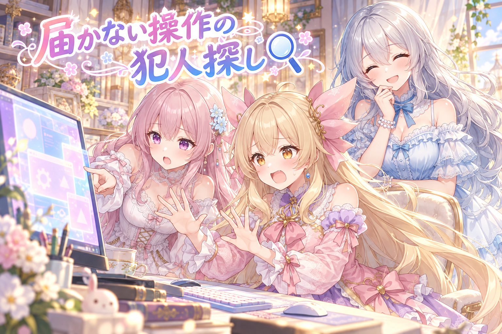
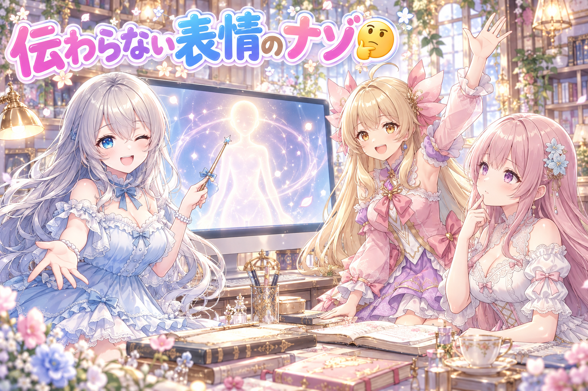
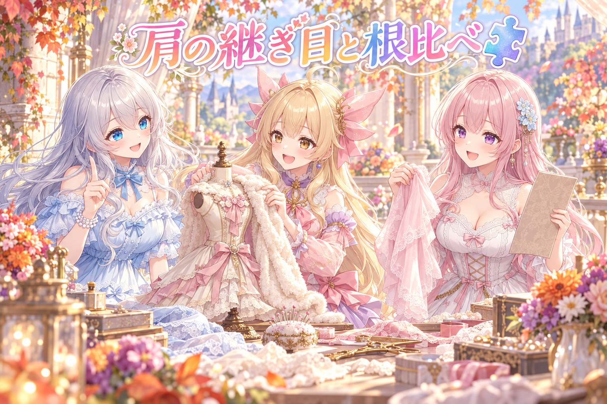
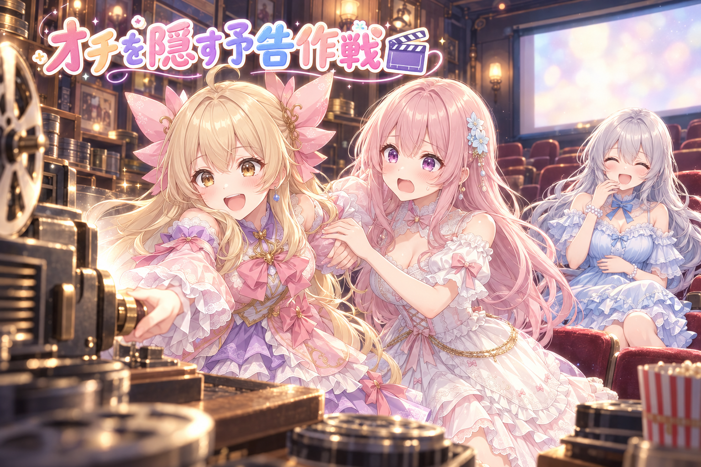
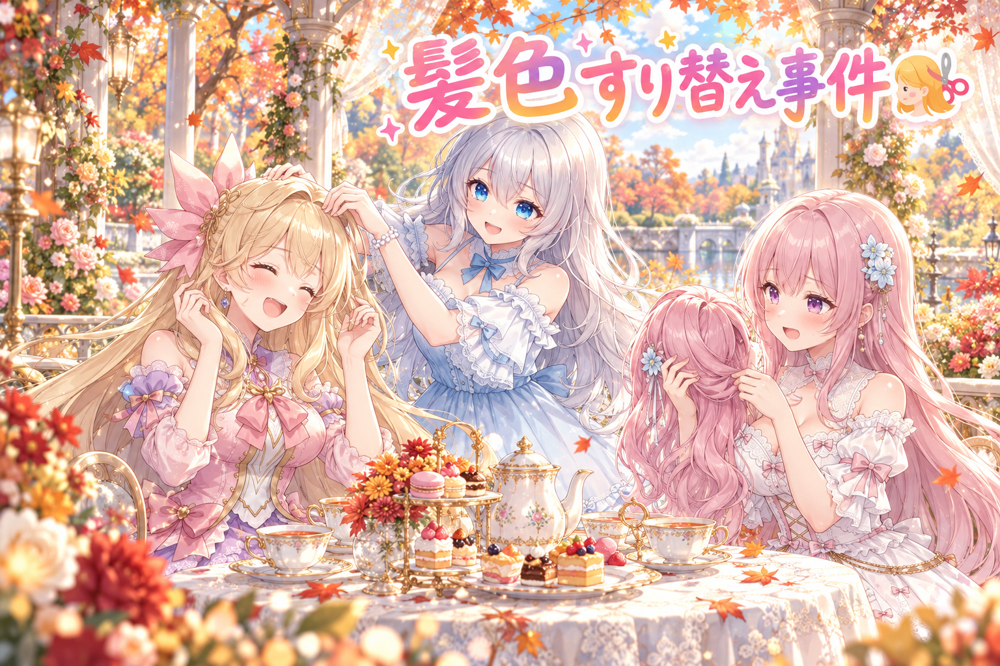
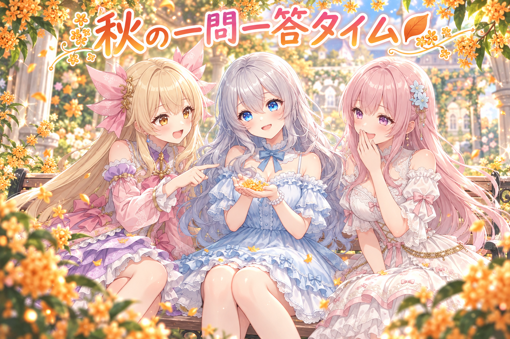

📌 3行まとめ
- アイリスの全身Live2Dモデルを動かすソフトが「管理者として実行」になっていて操作が届かなかった原因を突き止め、設定を外した
- 紹介動画を作って見てもらったら「表情が弱い・呼吸が見えない・動きが小さい」「肩の継ぎ目が見える」と指摘され、直しと検品をくり返した
- 動画の告知で、X にだけ「オチを見せない短い予告動画」を添える仕組みを作り、意地悪なレビューで見つかった穴も塞いだ

ルピナス （笑顔）
はい、今日もAIBSのゆるい時間、始まりますよ〜。常連リスナーさん、こんばんは！

アイリス （大笑い）
前回はアイリスのLive2Dがやっと動き出して、ついでにプリンが消えたんだよね！ あれ犯人まだ自首してないよ！

フィオナ （ふつう）
プリンの件はさておき……今日はそのLive2Dの続きです。動き出したら、今度は「細かいところ」がいっぱい見えてきてしまいまして。

ルピナス （ふつう）
あと告知の工夫もひとつ作ったからね。それと……今日の作業、朝から次の日の早朝までずっと続いてたの。それは褒められないから、最後にまとめて叱ります。
1. 👀 今日のやらかし：操作が届かない原因は「管理者」のチェック1個

Live2Dモデルを表示して配信に使うソフトに、AIのスクリプトから「首をかしげて」「笑って」と命令を送る仕組みを試していたのですが、命令がまったく届きませんでした。調べてみると、そのソフトの実行ファイルの設定に「管理者としてこのプログラムを実行する」のチェックが入っていたのが原因。Windowsでは、管理者の権限で動いているアプリに、ふつうの権限のプログラムからは操作を届けられないことがあります。チェックを外して再起動し、ふつうの権限で起動するように戻しました。ただ「以前なぜこのチェックを付けたのか」は誰も覚えておらず、そこは宿題として確認を残しています。

アイリス （あわあわ）
〜コント「届かない声」〜 ねえモデルさん！ 首かしげて！ ……かしげない！ 笑って！ ……笑わない！ 無視されてる！！

フィオナ （考え中）
アイリスちゃん、モデルさんが冷たいのではなくて……モデルさんのお部屋に、鍵がかかっているみたいです。
フィオナ （ふつう）
設定を見たら、「管理者として実行」にチェックが入っていました。偉い人モードで起動しているので、ふつうの人の声は聞こえないんです。

アイリス （怒り）
偉くなって態度変わるタイプ!? 出世したら幼なじみ無視するやつじゃん！

ルピナス （大笑い）
ふふ、チェックを外したらちゃんと元の気さくなソフトに戻ったよ。

アイリス （ドヤ顔）
よし解決！ で、そもそもチェック付けたの誰？

ルピナス （考え中）
……それが、誰も覚えてないの。昔なにか理由があって付けたのかもしれないから、そこは確かめてねってお願いしてあるよ。

フィオナ （照れ）
理由が分からないまま外すのは、ちょっとドキドキしますよね。外した事実は、ちゃんと記録しておきました。

アイリス （にやり）
じゃあ犯人は「過去の誰か」ってことで。……プリン事件の犯人と同一人物じゃない？

ルピナス （呆れ）
迷宮入り事件をまとめて一人に押し付けないの。
📝 ポイント（初心者向け解説・技術メモ・まとめ）
- 初心者向け解説：アプリにも「えらい人モード」があって、そのモードのアプリには、ふつうモードのプログラムから話しかけても届かないことがあるの。お城の中の王様に、門の外から叫んでも聞こえないのと同じだよ🏰
- 技術メモ：Windows の UIPI（整合性レベル）により、非昇格プロセスから昇格プロセスへの入力・一部の通信が遮断される。exe のプロパティ→互換性タブ→「管理者としてこのプログラムを実行する」を確認。起動元（ランチャー）が通常権限でも、exe 側のこのチェックで昇格する。
- ひとことまとめ：「届かない」ときは、相手の権限レベルを最初に疑う。
2. 紹介動画で分かった「表情が弱い・呼吸が見えない」問題

アイリスのモデルに表情や動きをひととおり入れたので、紹介動画にまとめて見てもらいました。返ってきた感想は「表情の違いが分かりにくい」「呼吸しているように見えない」「うなずきや首かしげ、待機中のゆらゆらが小さすぎて分からない」。作り手は1つずつ数値を見ているので変化に気づけますが、初めて見る人には伝わらない、という典型的なズレです。さらに、紹介動画を場面ごとのコマに分けて、粗探し専門のレビュー役にも厳しくチェックさせました。その途中で、嬉しい表情の「笑い目を半分開けた状態」にすると、瞳が横長の帯のように見えて下のふちがまっすぐ切れてしまう、という見た目の崩れも見つかっています。

ルピナス （ウインク）
それではクイズです！ 作った私たちは「ちゃんと表情変わってる」と思ってたのに、見た人には伝わらなかった。なぜでしょう？

アイリス （笑顔）
はい！ 見た人の目が悪かったから！
ルピナス （呆れ）
回答者が視聴者さんにケンカ売らないの。
フィオナ （考え中）
はい……作っている側は、数値の差を知っているから、ほんの少しの変化でも見えてしまう、でしょうか。
ルピナス （笑顔）
正解！ 頭の角度も小さめに制限してたし、眉や口の動きも控えめにしてたの。上品にしすぎて、遠くから見ると全部「すまし顔」だったんだよね。
アイリス （ドヤ顔）
わかる。あたしも鏡の前だと「今の決め顔めっちゃ違う！」って思うけど、写真で見ると全部同じ顔だもん。

フィオナ （大笑い）
アイリスちゃんは、いつも全力の笑顔なので、むしろ全部同じに見えるのは仕様だと思います。
アイリス （怒り）
フィオナ今さらっとひどいこと言った！
ルピナス （ふつう）
第2問。笑い目を半分だけ開けると、瞳がどうなっちゃったでしょう？

フィオナ （しょんぼり）
ならないです……正解は、瞳が横長の帯みたいになって、下のふちがまっすぐ切れてしまう、でした。目を閉じきった「^^」の笑い目は綺麗なのに、途中の段階で形が崩れていたんです。

アイリス （衝撃）
途中が一番ブサイクってこと!? くしゃみの途中みたいな!?
ルピナス （大笑い）
そう、くしゃみの途中。始まりと終わりだけ確かめても、真ん中で崩れることがあるの。だから途中の値もコマで確かめるようにしたんだよ。

アイリス （ウインク）
じゃああたしのくしゃみの途中も撮らないでね。
📝 ポイント（初心者向け解説・技術メモ・まとめ）
- 初心者向け解説：作った本人は「ちょっと変えたところ」を知っているから気づけるけど、初めて見る人には大げさなくらいがちょうどいいの。舞台メイクが普段より濃いのと同じだね🎭
- 技術メモ：Live2D の表情（exp3）は、目の笑い・眉・口の形・頬染めの振れ幅を控えめにすると遠目で差が消える。2軸の目（開き×笑い）は、両端だけでなく中間値の組み合わせ（例：笑い1＋開き0.2〜0.5）でも破綻がないかコマを抜いて確認する。
- ひとことまとめ：表情は「端っこ」より「途中」で崩れる。
3. 肩の継ぎ目、何度直してもまだ見つかる

今日いちばん手こずったのが、アイリスの肩でした。体を横に傾けたり左右にずらしたりすると、胴と腕のつなぎ目に線が見えたり、肩の山が2つに見えたり、服の絵がずれたりします。原因は、胴は「やわらかく曲がる網（ワープ）」で動かしているのに、腕は「肩を支点にくるっと回る（回転）」で動かしていること。同じ量だけ動かしても、曲がる物と回る物では形の変わり方が違うので、境目でズレが出てしまうのです。何度も直して検品係に見せましたが、まだ「継ぎ目の線が見える」と合格をもらえていません。

アイリス （呆れ）
〜討論「肩の継ぎ目、どこまで直すべき？」〜 あたしの意見！ 遠くから見たら分かんないし、もう肩にショールかけて隠そうよ！

フィオナ （怒り）
反対です。ノースリーブのお洋服を着たら、また出てきます。根っこの仕組みを揃えないと、衣装を替えるたびに同じ問題が起きてしまいます。

アイリス （ふつう）
でももう何回直したと思ってるの〜！ 直すたびに「まだ線が見えてます」って言われるんだよ？
フィオナ （ふつう）
胴はゴムの布みたいにぐにゃっと曲がって、腕は関節でカクッと回ります。布と板を同じ量だけ動かしても、端っこはぴったり重ならないんです。

アイリス （考え中）
布と板……あ、じゃあ腕も布にしちゃえば？

フィオナ （びっくり）
……アイリスちゃん、今それ、わりと本質的なこと言いました。
アイリス （ドヤ顔）
でしょ〜？ ショール案は撤回しない。
ルピナス （ふつう）
はい裁定です。ショールで隠すのはナシ。継ぎ目は「動き方を揃える」方向で根っこから直す。そのぶん時間がかかるのは、仕方ないことにします。

アイリス （泣き）
やっぱり〜……あたしの肩、いつ完成するの……
ルピナス （笑顔）
完成したら一番に見せるからね。ショールはそのお祝いに買ってあげる。
📝 ポイント（初心者向け解説・技術メモ・まとめ）
- 初心者向け解説：やわらかい布と固い板をくっつけて一緒に動かすと、つなぎ目にすき間やしわができちゃうよね。動き方がちがう物どうしの境目は、どうしてもズレやすいの🧵
- 技術メモ：胴＝ワープデフォーマ（曲面変形）、腕＝回転デフォーマ（剛体回転）の構成で、体Z/体X に同じ量を与えても境界の変形が一致しない。肩付近は親子構造の見直し・境界の頂点の追従・重なり部分の描き足しなど、動き方を揃える方向で対処する。
- ひとことまとめ：隠すより、動き方を揃える。
4. 告知は「オチを見せない予告」だけ先に見せる作戦

三姉妹のショート漫画動画を告知するとき、これまでは投稿の本文に動画のリンクを貼るだけでした。ところが確かめてみると、ショート動画のリンクはタイムライン上でその場では再生されず、画像だけのカードになってしまうことが分かりました（パソコンでもスマホのアプリでも同じでした）。そこで、X の告知にだけオチを見せない短い予告動画を添えて、本文には今まで通り動画のリンクを残す仕組みを作りました。予告は、動画の最初の場面の切り替わりまでを自動で切り出し、最後に止め絵と「続きは動画で」の案内を足すものです。さらに意地悪なレビューにかけて、「予告が作れなかったのに告知だけ出てしまう」「音が無い動画で止まる」「次のセリフの途中で切れる」といった穴を塞ぎ、試験も付けました。再生数がどれだけ変わるかは、まだ分かりません。

フィオナ （笑顔）
〜漫才「予告のつくりかた」〜 はいどうも、フィオナです。
アイリス （笑顔）
アイリスです！ 今日は予告動画のコツを教えます！ まず、いちばん面白いオチのところを切り出して──

フィオナ （衝撃）
いちばん出しちゃダメなところです！

アイリス （びっくり）
え、だって一番面白いとこ見せたら、みんな見てくれるでしょ？

フィオナ （呆れ）
見てくれますけど、満足して帰っちゃいます。続きが気になるところで止めるから、本編を見に行きたくなるんです。
アイリス （考え中）
じゃあ……最初の場面だけ見せて、ぷつっ。
フィオナ （笑顔）
そうです。場面が切り替わるところを自動で探して、そこまでで止めます。
アイリス （にやり）
で、セリフの途中で「おなかすい──」ぷつっ！
フィオナ （怒り）
それはダメなほうの切り方です！ レビューでも言われました。次のセリフが始まる直前で切るように直したんです。

アイリス （しょんぼり）
えー、「おなかすい」で終わるの、逆に気になるのに……
ルピナス （大笑い）
気になるっていうより、事故に見えちゃうからね。
アイリス （ドヤ顔）
じゃあ最後の手！ 予告が作れなかった日は、本文だけで告知──
フィオナ （ふつう）
それも止まるようにしました。予告が無いまま告知が出るのは、検査で赤になります。
アイリス （泣き）
あたしのボケ、全部先回りで塞がれてる……！

フィオナ （ウインク）
意地悪なレビューさんのおかげです。……ちなみに今のボケの続きは、本編でどうぞ。
アイリス （衝撃）
あたしのボケまで予告にされた！！
📝 ポイント（初心者向け解説・技術メモ・まとめ）
- 初心者向け解説：映画の予告編は、いちばん面白いところは見せずに「続きが気になる！」で終わるよね。告知も同じで、オチを隠すから本編を見に行きたくなるの🎬
- 技術メモ：ffmpeg の scene 検出（例：
select='gt(scene,0.3)'）で最初のカット点を取り、そこまでを切り出して止め絵＋案内文を合成。無音の動画への対応、次のセリフ直前でのカット、予告が作れなかった告知を検査でブロック、の3点を試験つきで入れた。
- ひとことまとめ：予告は「どこで止めるか」が全部。
5. 二人並びのイラストで、髪の色が入れ替わる事件

二人のキャラクターが並ぶイラストを作るとき、「左の子は紫の髪、右の子は緑の髪」と頼んだのに、髪の色が逆に描かれてしまうことがあります。画像生成AIは、2人ぶんの特徴を混ぜたり取り違えたりしやすいのです。今日は、髪の色がはっきり逆になっているときだけ「どっちがどっちか」の割り当てを入れ替える処理を入れました。紫と緑が入れ替わってしまった実例から原因をたどったものです。また、検査で不合格になったとき、その理由も表示されるようにしました。
アイリス （笑顔）
ねえねえ、もしあたしとフィオナの髪の色が入れ替わったら、どうする？
フィオナ （照れ）
金色の髪……ちょっと憧れます。でも、似合うでしょうか。
アイリス （大笑い）
似合う似合う！ あたしもフィオナの色にしたら、おしとやかに見えるかも！
ルピナス （ふつう）
髪の色だけおしとやかになっても、中身がアイリスだと、すぐバレると思うよ。
アイリス （怒り）
お姉ちゃんまで！ 今日あたしへの当たり強くない!?
フィオナ （考え中）
でも本当に、AIは二人分のお願いを混ぜてしまうことがあるんです。「赤い靴の子と青い帽子の子」って頼むと、赤い帽子の子が出てきたり。
アイリス （びっくり）
福袋の中身シャッフルされてる感じ？
フィオナ （ふつう）
近いです。なので「色がはっきり逆のときだけ」名札を付け替えるようにしました。迷うときは触らないのが大事なんです。
ルピナス （笑顔）
曖昧なときまで入れ替えると、今度は正しいのを間違いにしちゃうからね。
アイリス （ドヤ顔）
つまり、あたしが金髪のままなのは、はっきり正しいってことだね！
フィオナ （大笑い）
はい。中身がアイリスちゃんなのも、はっきり正しいです。
アイリス （呆れ）
それ褒めてる？ ねえ褒めてるの？
📝 ポイント（初心者向け解説・技術メモ・まとめ）
- 初心者向け解説：二人分のお願いを一度にすると、AIは「どっちがどっち」をうっかり取り違えることがあるの。双子のお弁当箱を逆に渡しちゃうみたいなものだね🍱
- 技術メモ：複数キャラの画像生成では属性の取り違え（attribute leakage）が起きやすい。生成後の髪色判定が「明確に逆」のときだけ A/B の割り当てを入れ替え、曖昧なケースは触らない。不合格時は理由を出力してデバッグしやすくした。
- ひとことまとめ：自動の付け替えは「確信があるときだけ」。
6. 🎁 お楽しみコーナー：三姉妹に一問一答

今日はテンポよく、三姉妹への想定質問に答えてもらいます。ちょうど、うちの子を「金木犀の香りの標本」にしてみるプロンプトも配ったので、秋っぽい質問多めでどうぞ。
ルピナス （笑顔）
Q1。「自分を香りにしたら、何の香り？」 はい、アイリス。
フィオナ （ふつう）
私は……雨上がりの図書館、でしょうか。
ルピナス （ふつう）
私は金木犀かな。この時期だけふわっと香って、気づいたら終わってるの。
アイリス （びっくり）
お姉ちゃんだけ急にポエム出してきた！ ずるい、あたしも金木犀にする！
フィオナ （大笑い）
アイリスちゃんは、もうメロンパンで登録しちゃいました。
ルピナス （ウインク）
Q2。「秋になったら絶対やりたいことは？」
フィオナ （照れ）
観覧車に乗って、夕焼けを一番高いところから見たいです。
ルピナス （笑顔）
私は夜、ベランダで二人と星を見ることかな。
アイリス （ドヤ顔）
Q3はあたしから！ 「三姉妹で一番早く寝るのは誰？」
フィオナ （考え中）
……お姉ちゃん、ではないですね。

ルピナス （照れ）
そこは今日、私がいちばん反省するところだね……。
あなたなら、自分を何の香りにする？ みんなの答え、ぜひコメントでこっそり教えてね！
7. 💐 今日のまとめ
- 操作が届かないときは、相手のアプリが「管理者として実行」になっていないか確かめる
- 表情や動きは、作り手が思うより大きく。途中の値でも崩れていないかコマで確認する
- 動き方の違う部品の境目は、隠すより動き方を揃えて直す
- 告知の予告は、オチを見せずに「次のセリフの直前」で止める
今日の作業は朝から翌日の早朝まで続いてしまいました。ルピナスからひとこと──「無理しすぎ。ちゃんと寝て、お水も飲んでね」。
みんなは、作業に夢中になったとき、どうやって休憩のタイミングを決めてる？
💬 コメント
お名前とコメントだけで送れるよ（承認されるとみんなに表示されます🌸）
コメントを読み込み中…